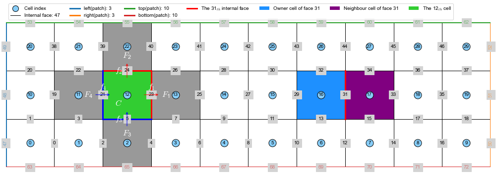
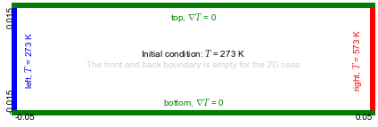
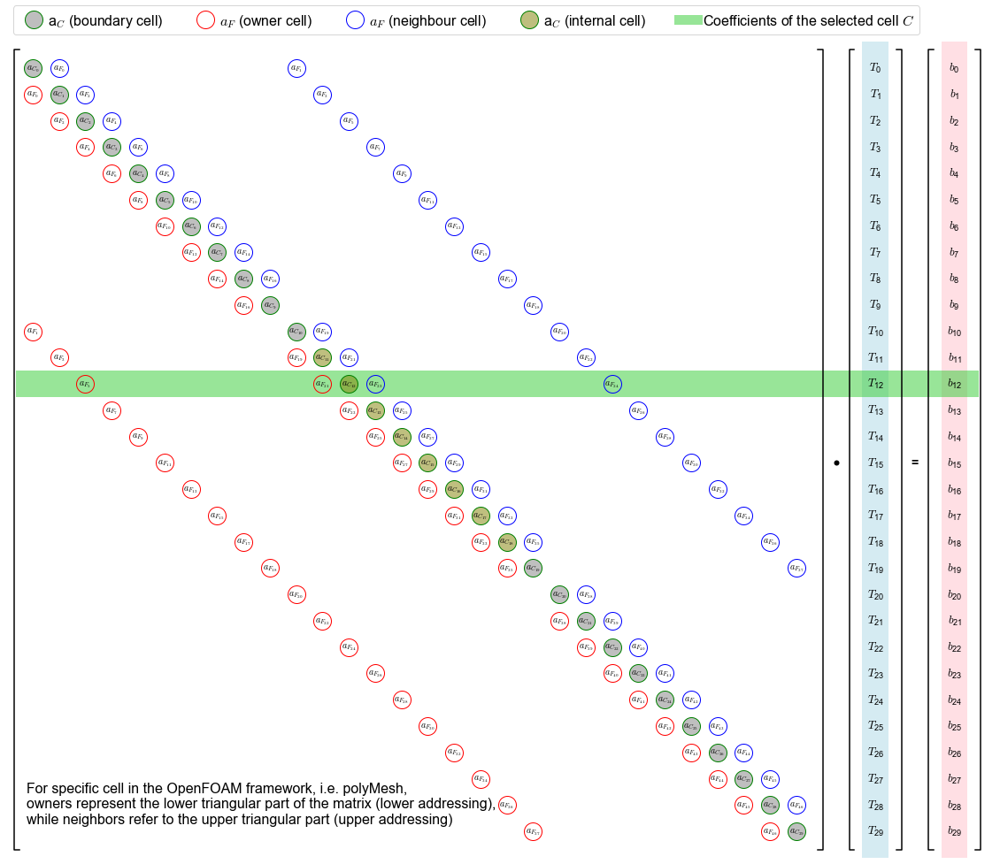
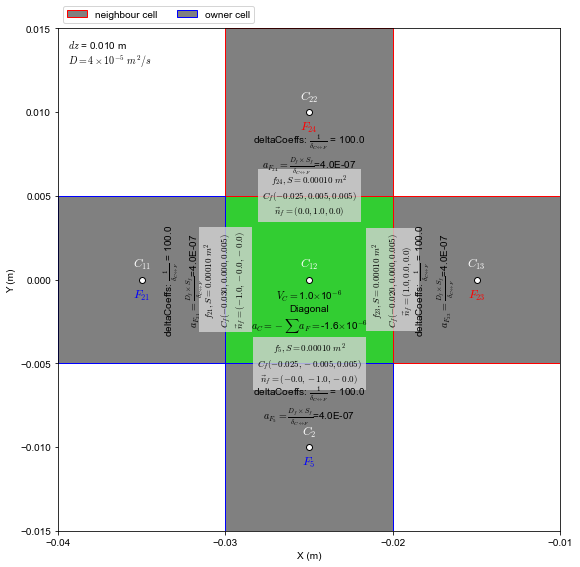

[1]:
from vtk import *
from vtk.util import numpy_support as VN
import meshio
import matplotlib.pyplot as plt
import matplotlib as mpl
from matplotlib.ticker import MultipleLocator
import numpy as np
import linecache
import os
import sciPyFoam.polyMesh2d as mesh2d
mpl.rcParams['font.family'] = 'Arial'
mpl.rcParams['font.size'] = 12
mpl.rcParams['mathtext.fontset'] = 'cm'
dpi=600
fig_fmt=['svg','pdf']
# path----------
path_figures='../../../../_figures'
1. Read and plot mesh information
Please use command pip install sciPyFoam to install a usefull python package to read polyMesh and plot mesh topology.
There are 5 functions are available in sciPyFoam.polyMesh 1. x, y, z, cells_rect=mesh2d.readInternal('case/VTK/case_0.vtk') 2. faces = readFaces(caseDir) 3. owners = readOwner(caseDir) 4. neighbours = readNeighbour(caseDir) 5. boundaries, index_internalFaces, name_faces = readBoundary(caseDir,nFaces)
Interesting and smart design! the internal face index is consecutive and from zero.
[2]:
caseName='regularBox' # regularBox, unstructured, these are two cases we prepared
solver='test_laplacianFoam'
caseDir='../%s'%(caseName) # set your own path!!!
mesh=mesh2d.read(caseDir)
nCells=len(mesh['cells']['faces'])
index_cellC=12
if(index_cellC>=nCells):
index_cellC=int(nCells/2)
# plot
figsize_mesh=(14,5)
fig=plt.figure(figsize=figsize_mesh)
ax=plt.gca()
ax.axis('scaled')
x,y,z,cells_rect,faces,boundaries,owners,neighbours=mesh2d.plotMeshTopology(ax,caseDir,ind_cell=index_cellC,index_intFace=31,lw=3)
# set axis
ax.set_xlim(x.min(), x.max())
ax.set_ylim(y.min(), y.max())
ax.set_xlabel('X (mm)')
ax.set_ylabel('Y (mm)')
ax.axis('off')
plt.tight_layout()
leg=ax.legend(ncol=7,loc='lower left', bbox_to_anchor=[0,1])
leg.legendHandles[0]._legmarker.set_markersize(12)
fname_fig= lambda fmt: str('%s/mesh_FVM_%s.%s'%(path_figures,caseName,fmt))
for fmt in fig_fmt:
plt.savefig(fname_fig(fmt),dpi=dpi,bbox_inches='tight')
plt.show()
nBoundaries: 5, ['left', 'right', 'top', 'bottom', 'frontAndBack']
nInternalFaces: 47
nBoundaries: 5, ['left', 'right', 'top', 'bottom', 'frontAndBack']
nInternalFaces: 47

2. Boundary conditions
[3]:
fig=plt.figure(figsize=(6,6))
ax=plt.gca()
bcs={'left':{'text':'$T$ = 273 K','lc':'b', 'x':[],'y':[], 'scale':[0.95,1], 'bc':273},
'right':{'text':'$T$ = 573 K','lc':'r', 'x':[],'y':[], 'scale':[0.95,1], 'bc':573},
'top':{'text':'$\\nabla T $ = 0','lc':'g', 'x':[],'y':[], 'scale':[1, 0.9], 'bc':0},
'bottom':{'text':'$\\nabla T $ = 0','lc':'g', 'x':[],'y':[], 'scale':[1, 0.9], 'bc':0}}
ax.axis('scaled')
# print(faces)
for name,index in zip(boundaries['name'],boundaries['index']):
if(name=='frontAndBack'):
continue
for patchIndex in index:
x_bd,y_bd=x[faces['index'][patchIndex]], y[faces['index'][patchIndex]]
ax.plot(x_bd,y_bd,color=bcs[name]['lc'],lw=6,clip_on=False)
bcs[name]['x'].append(x_bd)
bcs[name]['y'].append(y_bd)
bcs[name]['x'],bcs[name]['y']=np.array(bcs[name]['x']),np.array(bcs[name]['y'])
if(bcs[name]['y'].min()==bcs[name]['y'].max()):
ax.text(bcs[name]['x'].mean()*bcs[name]['scale'][0],bcs[name]['y'].mean()*bcs[name]['scale'][1], '%s, %s'%(name,bcs[name]['text']),ha='center',va=name,color=bcs[name]['lc'])
elif(bcs[name]['x'].min()==bcs[name]['x'].max()):
ax.text(bcs[name]['x'].mean()*bcs[name]['scale'][0],bcs[name]['y'].mean()*bcs[name]['scale'][1], '%s, %s'%(name,bcs[name]['text']),ha=name,va='center',rotation=90,color=bcs[name]['lc'])
ax.text(0.5,0.51,'Initial condition: $T$ = 273 K',va='bottom',ha='center',transform=ax.transAxes)
ax.text(0.5,0.49,'The front and back boundary is empty for the 2D case',va='top',ha='center',color='lightgray',transform=ax.transAxes)
ax.text(0,0,'%.2f'%(x.min()),ha='left',va='top',transform=ax.transAxes)
ax.text(1,0,'%.2f'%(x.max()),ha='right',va='top',transform=ax.transAxes)
ax.text(0,0,'%.3f'%(y.min()),ha='right',va='bottom',transform=ax.transAxes,rotation=90)
ax.text(0,1,'%.3f'%(y.max()),ha='right',va='top',transform=ax.transAxes,rotation=90)
# set axis
ax.set_xlim(x.min(), x.max())
ax.set_ylim(y.min(), y.max())
ax.xaxis.set_ticks([x.min(), x.max()])
ax.yaxis.set_ticks([y.min(), y.max()])
# ax.set_xlabel('X (mm)')
# ax.set_ylabel('Y (mm)')
ax.axis('off')
plt.tight_layout()
# leg=ax.legend(ncol=7,loc='lower left', bbox_to_anchor=[0,1])
# leg.legendHandles[0]._legmarker.set_markersize(12)
fname_fig= lambda fmt: str('%s/boundaryConditions_FVM_%s.%s'%(path_figures,caseName,fmt))
for fmt in fig_fmt:
plt.savefig(fname_fig(fmt),dpi=dpi,bbox_inches='tight')
plt.show()

3. Plot coefficients matrix
[9]:
# plot
figwidth=20
fig=plt.figure(figsize=(figwidth, figwidth/(nCells+5)*nCells))
ax=plt.gca()
ax.axis('scaled')
xmin,xmax=-0.5,nCells+6.5
ymin,ymax=-0.5,nCells-0.5
ax.set_xlim(xmin-0.5, xmax)
ax.set_ylim(ymin-0.5, ymax+0.5)
ax.xaxis.set_major_locator(MultipleLocator(1))
ax.yaxis.set_major_locator(MultipleLocator(1))
ax.invert_yaxis()
# 1. plot matrix A
# ax.axvspan(xmin,xmin+nCells, fc='lightgray',alpha=0.5)
w_bracket=0.2
x_bracket, y_bracket=[xmin, xmin-w_bracket, xmin-w_bracket,xmin],[ymin-w_bracket, ymin-w_bracket, ymax+w_bracket, ymax+w_bracket]
l_brack,=ax.plot(x_bracket, y_bracket,color='k')
x0=nCells-w_bracket
x_bracket, y_bracket=[x0, x0+w_bracket, x0+w_bracket,x0],[ymin-w_bracket, ymin-w_bracket, ymax+w_bracket, ymax+w_bracket]
ax.plot(x_bracket, y_bracket,color='k')
# 2. plot vector T
x0=nCells+1.5
x_T=x0
ax.axvspan(x0, x0+1, fc='lightblue',alpha=0.5)
x0=nCells+1+w_bracket
x_bracket, y_bracket=[x0, x0-w_bracket, x0-w_bracket,x0],[ymin-w_bracket, ymin-w_bracket, ymax+w_bracket, ymax+w_bracket]
l_brack,=ax.plot(x_bracket, y_bracket,color='k')
x0=nCells+3-w_bracket
x_bracket, y_bracket=[x0, x0+w_bracket, x0+w_bracket,x0],[ymin-w_bracket, ymin-w_bracket, ymax+w_bracket, ymax+w_bracket]
ax.plot(x_bracket, y_bracket,color='k')
# 3. plot vector b
x0=nCells+4.5
x_b=x0
ax.axvspan(x0, x0+1,fc='pink',alpha=0.5)
x0=nCells+4+w_bracket
x_bracket, y_bracket=[x0, x0-w_bracket, x0-w_bracket,x0],[ymin-w_bracket, ymin-w_bracket, ymax+w_bracket, ymax+w_bracket]
l_brack,=ax.plot(x_bracket, y_bracket,color='k')
x0=nCells+6-w_bracket
x_bracket, y_bracket=[x0, x0+w_bracket, x0+w_bracket,x0],[ymin-w_bracket, ymin-w_bracket, ymax+w_bracket, ymax+w_bracket]
ax.plot(x_bracket, y_bracket,color='k')
# plot matrix value
ms=20
label_C_internal='a$_{C}$ (internal cell)'
label_C_boundary='a$_{C}$ (boundary cell)'
label_F_owner='$a_{F}$ (owner cell)'
label_F_neigh='$a_{F}$ (neighbour cell)'
for i, owner,neighbour in zip(range(0,nCells),mesh['cells']['owner'],mesh['cells']['neighbour']):
faces_cellC=mesh['cells']['faces'][i]
num_internal_faces=0
for face in faces_cellC:
if(faces['name'][face]=='internal'):
num_internal_faces=num_internal_faces+1
if(num_internal_faces==(len(faces_cellC)-2)): # remove frontAndBack faces
ax.plot(i,i,'o',ms=ms,mfc=(0.5,0.5,0,0.5),mec='g', label=label_C_internal)
label_C_internal=None
else:
ax.plot(i,i,'o',ms=ms,mfc=(0.5,0.5,0.5,0.5),mec='g', label=label_C_boundary)
label_C_boundary=None
ax.text(i,i,'$a_{C_{%d}}$'%(i),ha='center',va='center')
# nodes_cellC=np.array([faces['index'][ii] for ii in faces_cellC]).flatten()
# x_cellC,y_cellC,z_cellC=x[nodes_cellC], y[nodes_cellC],z[nodes_cellC]
# xc,yc=x_cellC.mean(),y_cellC.mean()
owner,neighbour=np.array(owner),np.array(neighbour)
# owner cell
ax.plot(owner,owner*0+i, 'o',ms=ms,mfc='None',mec='r', label=label_F_owner)
label_F_owner=None
for o in owner:
for face in faces_cellC:
if(mesh['owners'][face]==o):
ax.text(o, i, '$a_{F_{%d}}$'%(face), ha='center',va='center')
# neighbour cell
ax.plot(neighbour,neighbour*0+i, 'o',ms=ms,mfc='None',mec='b', label=label_F_neigh)
label_F_neigh=None
for n in neighbour:
for face in faces_cellC:
if(faces['name'][face]=='internal'):
if(mesh['neighbours'][face]==n):
ax.text(n, i, '$a_{F_{%d}}$'%(face), ha='center',va='center')
# T
ax.text(x_T+0.5, i, '$T_{\mathregular{%d}}$'%(i), ha='center',va='center',fontsize=13)
# b
ax.text(x_b+0.5, i, '$b_{\mathregular{%d}}$'%(i), ha='center',va='center',fontsize=13)
# marker the selected cell coefficents
ax.axhspan(index_cellC-0.5, index_cellC+0.5, xmin=0.01, xmax=0.985, fc='limegreen',alpha=0.5, label='Coefficients of the selected cell $C$')
# dot
ax.plot(nCells+0.5,nCells/2.0,'o',mfc='k',mec='None')
# =
ax.text(nCells+3.5,nCells/2.0,'=',fontsize=14, fontweight='bold',va='center',ha='center')
# plot comments
comments="""
For specific cell in the OpenFOAM framework, i.e. polyMesh,
owners represent the lower triangular part of the matrix (lower addressing),
while neighbors refer to the upper triangular part (upper addressing)
"""
ax.text(0.02, 0.02, comments, ha='left',va='bottom', transform=ax.transAxes, fontsize=16)
ax.axis('off')
# ax.grid(axis='y',which='major',lw=1, color='gray')
# ax.yaxis.set_ticklabels([])
# plt.tight_layout()
leg=ax.legend(ncol=7,loc='lower left', bbox_to_anchor=[0,1], handletextpad=0,fontsize=16)
# for l in leg.legendHandles[0:3]:
# l._legmarker.set_markersize(16)
fname_fig= lambda fmt: str('%s/matrix_FVM_%s.%s'%(path_figures,caseName,fmt))
for fmt in fig_fmt:
plt.savefig(fname_fig(fmt),dpi=dpi,bbox_inches='tight')
plt.show()

Implementation in OpenFOAM
Not yet test for unstructured mesh!!!
1. Coordinates and delta coefficients of internal cell
[126]:
def plotCell(ax, index_cell, coeffType, fc=None, ec=None,label=None, showFace=False, showF=False, D=4E-5):
faces_cellC=mesh['cells']['faces'][index_cell]
nodes_cellC=np.array([faces['index'][ii] for ii in faces_cellC]).flatten()
x_cellC,y_cellC,z_cellC=x[nodes_cellC], y[nodes_cellC],z[nodes_cellC]
xc,yc=x_cellC.mean(),y_cellC.mean()
a_C_cellC=0
for face in faces_cellC:
x_tmp,y_tmp,z_tmp=x[faces['index'][face]], y[faces['index'][face]], z[faces['index'][face]]
v1=[x_tmp[1]-x_tmp[0], y_tmp[1]-y_tmp[0], z_tmp[1]-z_tmp[0]]
v2=[x_tmp[2]-x_tmp[1], y_tmp[2]-y_tmp[1], z_tmp[2]-z_tmp[1]]
Sf=np.cross(v1,v2)
magSf=np.sqrt(np.sum(Sf**2))
norm=Sf/magSf
ang_rot = 90-np.arccos(np.dot(norm,[1,0,0]))/np.pi*180 # make text nice in the figure
# !!!!!!!! key point !!!!!!!!!!!!!!!!
norm_face_cell, Sf_face_cell = norm, Sf
if(mesh['owners'][face]==index_cell):
norm_face_cell, Sf_face_cell = norm, Sf
else:
norm_face_cell, Sf_face_cell = -norm, -Sf
#!!!!!!!!!!!!!!!!!!!!!!!!!!!!!!!!!!!!!!!
ax.fill(x_tmp, y_tmp, fc=fc, ec=ec, label=label)
label=None
# plot face
if( (faces['name'][face]!='frontAndBack') & (showFace==True) ):
ax.text(x_tmp.mean(), y_tmp.mean(),'$f_{%d}, S=%.5f\ m^2$\n$C_f(%.3f, %.3f, %.3f)$\n$\\vec{n}_f=(%.1f, %.1f, %.1f)$'%(face, magSf,
x_tmp.mean(), y_tmp.mean(), z_tmp.mean(), norm_face_cell[0], norm_face_cell[1], norm_face_cell[2]),
ha='center',va='center',bbox={'color':'lightgray','ec':'None', 'alpha':0.8}, fontsize=9, rotation=ang_rot)
# plot cell who share face with the cell
if(showF & (faces['name'][face]=='internal')):
ind_cellF = mesh['neighbours'][face]
if(ind_cellF!=index_cell):
faces_cellF=mesh['cells']['faces'][ind_cellF]
nodes_cellF=np.array([faces['index'][ii] for ii in faces_cellF]).flatten()
x_cellF, y_cellF=x[nodes_cellF],y[nodes_cellF]
ax.text(x_cellF.mean(), y_cellF.mean()-0.0005,'$F_{%d}$'%(face), ha='center', va='top', fontsize=12, color='r')
# plot delta coefficient
dist_C_F=np.sqrt((xc-x_cellF.mean())**2 + (yc-y_cellF.mean())**2)
delta_CF=1.0/dist_C_F
a_F=D*delta_CF*magSf
a_C_cellC-=a_F
text='deltaCoeffs: $\\frac{1}{\delta_{C\leftrightarrow F}}$ = %.1f'%(delta_CF)
if(coeffType=='Laplacian'):
text+='\n$a_{F_{%d}}=\\frac{D_f\\times S_f}{\delta_{C\leftrightarrow F}}$=%.1E'%(face, a_F)
ax.text(x_tmp.mean()+norm[0]*np.sqrt(magSf)/4, y_tmp.mean()+norm[1]*np.sqrt(magSf)/4, text,
ha='center', va='center', rotation=ang_rot)
if(showF & (faces['name'][face]=='internal')):
ind_cellF = mesh['owners'][face]
if(ind_cellF!=index_cell):
faces_cellF=mesh['cells']['faces'][ind_cellF]
nodes_cellF=np.array([faces['index'][ii] for ii in faces_cellF]).flatten()
x_cellF, y_cellF=x[nodes_cellF],y[nodes_cellF]
ax.text(x_cellF.mean(), y_cellF.mean()-0.0005,'$F_{%d}$'%(face), ha='center', va='top', fontsize=12, color='b')
# plot delta coefficient
dist_C_F=np.sqrt((xc-x_cellF.mean())**2 + (yc-y_cellF.mean())**2)
delta_CF=1.0/dist_C_F
a_F=D*delta_CF*magSf
a_C_cellC-=a_F
text='deltaCoeffs: $\\frac{1}{\delta_{C\leftrightarrow F}}$ = %.1f'%(delta_CF)
if(coeffType=='Laplacian'):
text+='\n$a_{F_{%d}}=\\frac{D_f\\times S_f}{\delta_{C\leftrightarrow F}}$=%.1E'%(face, a_F)
ax.text(x_tmp.mean()-norm[0]*np.sqrt(magSf)/4, y_tmp.mean()-norm[1]*np.sqrt(magSf)/4,text,
ha='center', va='center', rotation=ang_rot)
if(showF & (faces['name'][face] in ['right','left','bottom','top'])):
x_cellF, y_cellF=x_tmp, y_tmp
# plot delta coefficient
dist_C_F=np.sqrt((xc-x_cellF.mean())**2 + (yc-y_cellF.mean())**2)
delta_CF=1.0/dist_C_F
gradientInternalCoeffs='-$\\frac{1}{\delta_{C\leftrightarrow f}}$'
gradientBoundaryCoeffs='$\\frac{1}{\delta_{C\leftrightarrow f}} \\times T_f$ = %.1f'%(delta_CF*bcs[faces['name'][face]]['bc'])
internalCoeffs=-delta_CF*D*magSf
boundaryCoeffs=internalCoeffs*bcs[faces['name'][face]]['bc']
if(faces['name'][face] in ['top','bottom']):
gradientInternalCoeffs='0'
gradientBoundaryCoeffs='q_f = %f'%(bcs[faces['name'][face]]['bc'])
internalCoeffs = 0
boundaryCoeffs=bcs[faces['name'][face]]['bc']*magSf
a_C_cellC+=internalCoeffs
text="""
mesh\ndeltaCoeffs: $\\frac{1}{\delta_{C\leftrightarrow f}}$ = %.1f
gradientInternalCoeffs = %s
gradientBoundaryCoeffs = %s
"""%(delta_CF,gradientInternalCoeffs,gradientBoundaryCoeffs)
if(coeffType=='Laplacian'):
text+="""
fvm::Laplacian\ninternalCoeffs = gradientInternalCoeffs * $D_f\\times S_f$ = %.1E = -$a_{F_{%d}}$
boundaryCoeffs = %.4E = -$c_{F_{%d}}$ (source)
"""%(internalCoeffs,face, boundaryCoeffs,face)
ax.text(x_tmp.mean()+norm[0]*np.sqrt(magSf)/2, y_tmp.mean()+norm[1]*np.sqrt(magSf)/2,text,
ha='center', va='center', rotation=ang_rot, color='orange')
ax.plot(x_tmp, y_tmp, lw=3,color=bcs[faces['name'][face]]['lc'], label='Boundary: '+faces['name'][face], clip_on=False)
# plot cell center
ax.plot(xc,yc,'o', mfc='w', mec='k')
ax.text(xc, yc+0.0005, '$C_{%d}$'%(index_cell), color='w', ha='center',va='bottom',fontsize=12)
# calculate cell volume
len_x,len_y,len_z=x_cellC.max()-x_cellC.min(), y_cellC.max()-y_cellC.min(), z_cellC.max()-z_cellC.min()
Vc=len_x*len_y*len_z
return xc,yc,Vc,[len_x, len_y, len_z],a_C_cellC
[109]:
fig=plt.figure(figsize=(8,8))
ax=plt.gca()
ax.axis('scaled')
coeff_type='Laplacian' # delta, Laplacian, ddt
# 1.2 plot the internal cell[index_cellC]
xc_cellC, yc_cellC, V_cellC, len_xyz,a_C_cellC=plotCell(ax, index_cellC, coeff_type, fc='limegreen', ec='k', showFace=True, showF=True)
str_Vc,str_a_C = '%E'%(V_cellC),'%E'%(a_C_cellC)
ax.text(xc_cellC, yc_cellC-0.0005, '$V_{C}=$%s$\\times$10$^{%.0f}$\nDiagonal\n$a_{C}=-\\sum a_F = $%s$\\times$10$^{%.0f}$'
%(float(str_Vc.split('E')[0]), float(str_Vc.split('E')[1]),
float(str_a_C.split('E')[0]), float(str_a_C.split('E')[1])), ha='center', va='top')
ax.text(0.02, 0.98, '$dz$ = %.3f m\n$D=4\\times 10^{-5}\ m^2/s$'%(len_xyz[2]), transform=ax.transAxes, ha='left',va='top')
# 1.2.1 plot neighbour cells of the cell
label='neighbour cell'
a_F_cellC=0
for cellI in mesh['cells']['neighbour'][index_cellC]:
plotCell(ax, cellI, coeff_type, fc='gray',ec='r',label=label)
label=None
# 1.2.2 plot owner cells of the cell
label='owner cell'
for cellI in mesh['cells']['owner'][index_cellC]:
plotCell(ax, cellI, coeff_type, fc='gray',ec='b',label=label)
label=None
# set axis
ax.set_xlim(-0.04, -0.01)
ax.set_ylim(y.min(), y.max())
ax.xaxis.set_major_locator(MultipleLocator(0.01))
ax.yaxis.set_major_locator(MultipleLocator(0.005))
ax.set_xlabel('X (m)')
ax.set_ylabel('Y (m)')
# ax.axis('off')
plt.tight_layout()
leg=ax.legend(ncol=7,loc='lower left', bbox_to_anchor=[0,1])
# leg.legendHandles[0]._legmarker.set_markersize(12)
fname_fig= lambda fmt: str('%s/Coordinate_%s_internalcell_%s.%s'%(path_figures,coeff_type, caseName,fmt))
for fmt in fig_fmt:
plt.savefig(fname_fig(fmt),dpi=dpi,bbox_inches='tight')

2. Coordinates and delta coefficients of boundary cell
[129]:
indices_boundaryC = [19, 9, 0, 10, 5]
index_boundaryC = 10
for index_boundaryC in indices_boundaryC:
fig=plt.figure(figsize=(8,8))
ax=plt.gca()
ax.axis('scaled')
# 1.2 plot the internal cell[index_cellC]
xc_cellC, yc_cellC, V_cellC, len_xyz, a_C_cellC=plotCell(ax, index_boundaryC, coeff_type, fc='limegreen', ec='k', showFace=True, showF=True)
str_Vc,str_a_C = '%E'%(V_cellC),'%E'%(a_C_cellC)
ax.text(xc_cellC, yc_cellC-0.0005, '$V_{C}=$%s$\\times$10$^{%.0f}$\nDiagonal\n$a_{C}=-\\sum a_F = $%s$\\times$10$^{%.0f}$'
%(float(str_Vc.split('E')[0]), float(str_Vc.split('E')[1]),
float(str_a_C.split('E')[0]), float(str_a_C.split('E')[1])), ha='center', va='top')
ax.text(0.02, 0.98, '$dz$ = %.3f m\n$D=4\\times 10^{-5}\ m^2/s$'%(len_xyz[2]), transform=ax.transAxes, ha='left',va='top')
# 1.2.1 plot neighbour cells of the cell
label='neighbour cell'
for cellI in mesh['cells']['neighbour'][index_boundaryC]:
plotCell(ax, cellI, coeff_type, fc='gray',ec='y',label=label)
label=None
# 1.2.2 plot owner cells of the cell
label='owner cell'
for cellI in mesh['cells']['owner'][index_boundaryC]:
plotCell(ax, cellI, coeff_type, fc='gray',ec='b',label=label)
label=None
# set axis
ax.set_xlim(xc_cellC-0.015, xc_cellC+0.015)
ax.set_ylim(yc_cellC-0.015, yc_cellC+0.015)
ax.xaxis.set_major_locator(MultipleLocator(0.01))
ax.yaxis.set_major_locator(MultipleLocator(0.005))
ax.set_xlabel('X (m)')
ax.set_ylabel('Y (m)')
# ax.axis('off')
plt.tight_layout()
leg=ax.legend(ncol=7,loc='lower left', bbox_to_anchor=[0,1])
# leg.legendHandles[0]._legmarker.set_markersize(12)
fname_fig= lambda fmt: str('%s/Coordinate_%s_boundary_C%d_%s.%s'%(path_figures,coeff_type,index_boundaryC, caseName,fmt))
for fmt in fig_fmt:
plt.savefig(fname_fig(fmt),dpi=dpi,bbox_inches='tight')
plt.close()
[ ]: